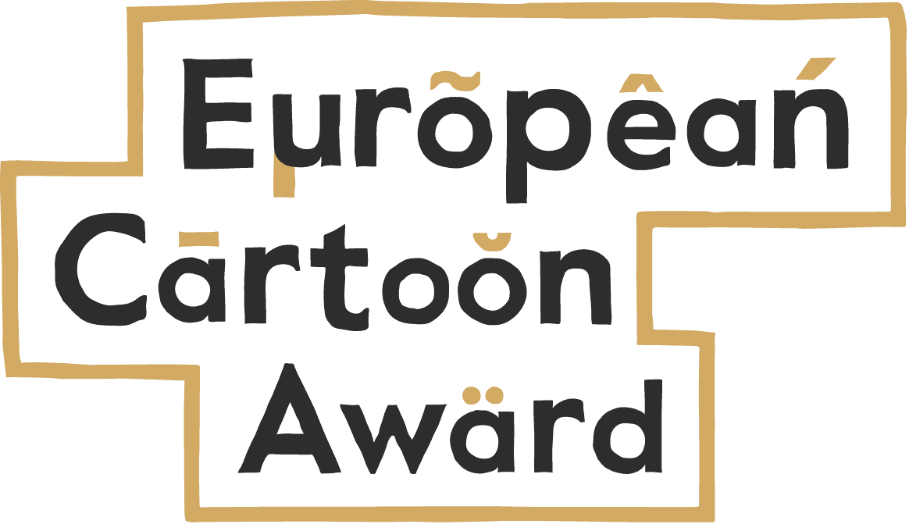

Dette forløb introducerer eleverne til politisk og social satire med særligt fokus på satiretegninger som ytringsform og samfundskommentar. Gennem seks lektioner arbejder eleverne med at analysere, fortolke og selv skabe satire, hvor de både forholder sig til virkemidler, målgrupper og grænser i ytringsfriheden.
Forløbet trækker på konkrete eksempler fra både dansk og europæisk kontekst – herunder Cartoon Awards, Charlie Hebdo, og historiske satiretegninger fra dansk politik. Undervisningen munder ud i en kreativ opgave, hvor eleverne i grupper og individuelt udvikler deres egen satiretegning med udgangspunkt i et tema.
Styrker ved forløbet:
Tværfagligt potentiale (dansk/samfundsfag)
Udvikler kritisk tænkning og visuel kommunikation
Perspektiverer aktuelle og historiske samfundsforhold
Giver plads til kreativitet og elevdrevne fortolkninger
Understøtter færdigheds- og vidensmål om demokrati, ytringsfrihed og medier
Forløbet lægger vægt på både indhold og etik i satiren og giver eleverne redskaber til at forstå og nuancere grænser for humor, magtkritik og tolerance i et demokratisk samfund.
Lærervejledning til forløbet
Digitale værktøjer
Software
Krita
Fælles Mål
Samfundsfag
Politik
Medier og politik
Eleven kan redegøre for hvordan medier kan anvendes til politisk deltagelse.
Eleven har viden om mediers anvendelse til politisk deltagelse.
Fremstilling
Fremstilling
Eleven kan udarbejde opinions- og ekspressive tekster.
Eleven har viden om virkemidler, grafisk designog efterproduktion.
Satiretegninger
Arbejd med satiretegninger og bliv klogere på politisk satire.
I dette forløb skal I arbejde med satiretegninger. Begrebet "satire" er en kunstnerisk genre, der gør grin med mennesker og særligt politiske begivenheder.
Igennem forløbet bliver I præsenteret for forskellige satiretegninger, som har haft betydning for dansk politik og sikkerhed.
Til sidst i forløbet skal I selv forsøge at tegne en satire tegning der passer til det valgte tema.
I dette forløb skal I arbejde med satiretegninger. Begrebet "satire" er en kunstnerisk genre, der gør grin med mennesker og særligt politiske begivenheder.
Igennem forløbet bliver I præsenteret for forskellige satiretegninger, som har haft betydning for dansk politik og sikkerhed.
Til sidst i forløbet skal I selv forsøge at tegne en satire tegning der passer til det valgte tema.
Efter detter forløb, vil I:
vide hvad satire tegninger er
have kenskab til Cartoon Awards
kende til forskellige typer satire tegninger
Hvad er European Cartoon Award

Den Europæiske Tegneseriepris (European Cartoon Award, ECA) blev grundlagt i 2019 for at tydeliggøre tegnere hvor vigtige roller de har i den kritiske samfundsdebat og stimulere samtaler om Europa.
European Cartoon Award uddeles årligt af Studio Europa Maastricht og gives for at anerkende satiretegningers indflydelse på den samfundsmæssige dialog.
I 2025 vil ECA samarbejde med Museum for Sound & Visions. ECA’25 og ”Cartoons Day” støttes af Haag Kommune og Stimuleringsfonds voor de Journalistiek.
Editorial cartoons are the first rough laugh of history. They help us understand the world around us and keep the powerful in check. We need to support cartoonists and celebrate their precious talent.
- Emanuele Del Rosso Organizer of the European Cartoon Award
For at opmuntre tegnere til at fortsætte deres vigtige arbejde, har ECA lanceret Den Europæiske Tegneseriepris, med en samlet værdi af €10.000 (€7.000 til vinderen og €1.500 til to andenpladsmodtagere).
The European Cartoon Award was founded by the European Press Prize and Studio Europa Maastricht in 2019 – the year in which the New York Times decided to stop running editorial cartoons altogether. We award courage and quality in the field of cartooning and foster conversation on the topic of Europe.
- europeancartoonaward.com
Hvad er satiretegning
Undersøg hvad satiretegninger er og hvem/hvad de retter sig imod
DR Kunstklub har i forbindelse med deres egen konkurrence: ”Lav en satiretegning og vind Storm P. bog”, adspurgt en håndfuld af tidens mest populære tegnere om hvad god satiretegning er:
En satiretegnings fornemmeste opgave er at gøre grin med magthaverne. Magthavere er tit forfængelige og gør man grin med dem, rammer man deres ømme punkt og får dem ned på jorden
- HuskMitNavn
En satiretegning skal kunne bide magthaverne i haserne og udstille magtmisbrug, hykleri og skære gennem populisme og tågesnak.
- Erik Petri
En satiretegning skal sætte aktuelle emner på spidsen for at understrege et hykleri eller en tendens, som er latterlig. I 2014 ville jeg sikkert fokusere på vores brug af sociale medier. Især journalisternes.
- Philip Ytournel
I 2014 skal satiretegningen kende sit publikum, da vi har færre og færre ting tilfælles på tværs af alder, bopæl, segment og andet.
- StineStregen
Historiske, ikoniske, forskellige
Nogle satiretegninger er blever noget nær ikoniske som f.eks. karikaturen af statsminister Poul Nyrup Rasmussen (S) med sin alt for lille cykelhjelm placeret akavet på toppen af hovedet eller statsminister Anders Fogh Rasmussen (V) i hulemandskostume. - ft.dk
De bedste satiriske tegninger kan med humør og vid spidde en situation med en præcision, som ord ikke kan.
- ft.dk
Nedenfor ses eksempler på en af de ældre danske satiretegninger og et eksempel på, hvordan satire kan gå over stregen.
En af de første vigtige
Herluf Jensenius karikerede i Blæksprutten i 1933 Kanslergadeforliget.
Danmarkshistoriens mest omfattende politisk-økonomiske aftaler, Kanslergadeforliget, blev den 30. januar 1933 indgået
mellem Venstre og regeringspartierne, Socialdemokratiet og Det Radikale Venstre.
Forliget blev indgået efter en hel nats forhandlinger på statsminister Thorvald Staunings (S) bopæl i Kanslergade på Østerbro.
Det Konservative Folkepartis Johan Christian Møller blev ikke inviteret indenfor til forhandlingerne. Han ses derfor, stående alene, under gadelampens skær.
Charlie Hebdo og "at gå over stregen"
Hvilke forskellige slags satire findes?
politik
sociale forhold
religion
nationalitet
køn
seksualitet
racisme
Politisk satire
Politisk satire er en form for humor, hvor man gør nar af politikere og andre magtfulde personer. Det kan f.eks. være en skuespiller, der efterligner en borgmester ved at klæde sig ud som ham eller hende og kopiere måden, de taler på. Politisk satire er især udbredt i aviser og medier.
Et godt eksempel er tegneren Roald Als fra Politiken, der er kendt for sine karakteristiske tegninger af den tidligere statsminister Anders Fogh Rasmussen. Han bliver ofte fremstillet som en hulemand med skægstubbe og en kølle, hvilket gør grin med hans fremtoning og politiske stil.
Et eksempel på en politisk satiretegning kan ses herunder:
P3 Essensen - Politikere kan ikke se komikken i britiske satiretegninger
Social satire
Social satire fokuserer på samfundets problemer og menneskers adfærd. Den kan f.eks. gøre grin med arbejdsløshed, fattigdom eller overforbrug af alkohol og tobak.
Et eksempel på social satire er animationsfilmen Terkel i knibe, som handler om drengen Terkel i 6. klasse. Komikeren Anders ”Anden” Matthesen lægger stemme til alle filmens karakterer. Gennem humor bliver både lærere, familie og venner udstillet og gjort til grin, fordi deres fejl og mangler bliver overdrevet og gjort komiske.
Religiøs satire
Religiøs satire er en form for humor, der gør grin med religion, religiøse personer, steder, symboler eller traditioner. Den bruges ofte til at stille spørgsmål ved religiøse normer eller gøre opmærksom på det absurde i visse forestillinger eller ritualer.
Et kendt eksempel er den britiske satiregruppe Monty Python, som i filmen Life of Brian laver sjov med kristendommen og korsfæstelsen. I filmen ser man karakteren Erik hænge på et kors, ligesom Jesus. Trods sin situation synger og fløjter han sangen Always Look on the Bright Side of Life, hvilket understreger den ironiske og humoristiske tilgang til et ellers alvorligt religiøst emne.
Vores satirekonkurence
Ud fra den viden I har tilegnet jer omkring satiretegninger, skal I nu lave jeres egen satire tegning.
Se først Jens Hage forklare hvad god satiretegning er.
Kristelig Dagblad - Jens Hage: Det kendetegner en god satiretegning
Arbejdsprocess - fra idé til tegning
I skal nu i grupper af 4 brainstorme idéer til en satiretegning.
Brainstorm
Sæt en timer på 5 min og kom med så mange forslag til emner eller aktuelle episoder som jeres tegning kan omhandle eller udstille.
I skulle nu gerne have en bunke af idéer, som I skal arbejde videre med.
Udvælg
Inddel jeres idéer i de forskellige kategorier - er det politik, sociale forhold, religion osv.
Del og forklar jeres idéer med et andet hold og lad det andet hold give feedback på jeres idéer.
Forfin jeres idéer og præciserer hvad I vil pointerer med en evt. tegning.
Alene - udvælg den idé du synes er bedst og forsøg at lave en satiretegning.
OPGAVE
Lav en satiretegning:
Keep it simple
Sort/hvid - eller farve
Der skal være en overskrift
Der må være en tekst under - eller talebobler
Helst tegnes i hånden
Gerne bruge clipart - kopiere billeder ind ex i skraldespand
Husk - klicher - symboler - ikoner - baggrund
Man må være én eller 2 sammen
Der må laves max 3 tegninger, min 1
TEMA
Nedenfor kan I se det tema jeres satiretegninger skal tage udgangspunkt i.
 © Foto: Unsplash
© Foto: Unsplash